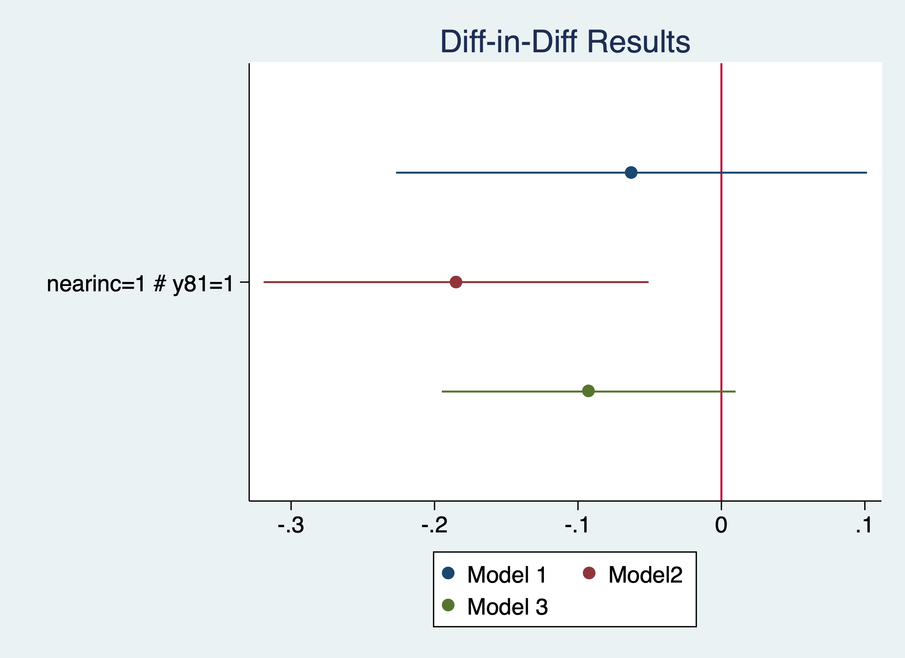

Chapter 2 Difference-in-Differences and Two-Way Fixed Effects
We will cover two of the most popular policy evaluation tools: difference-in-differences and the related two-way fixed effects (TWFE).
2.1 Diff-in-Diff
We will cover the implementation of the difference-in-difference research design. We only need the reg command to implement the design, but we will utilize the interaction operator. You only need pooled data for a difference-in-difference research design.
2.1.1 Effect of a garbage incinerator’s location on housing prices
Lesson: The 2-by-2 Difference-in-Difference estimator is simple to implement when we have our data set up correctly. We can use a sensitivity test to see if our results are robust.
\[ rprice_{it}=\beta_0 + \beta_1 nearinc_{it} + \beta_2 y81_t + \delta (nearinc*y81)_{i,t} + u_{it} \]
Kiel and McClain (1995) studied the effects of garbage incinerator’s location on housing prices in North Andover, MA. There were rumors of a new incinerator in 1978 and construction began in 1981, but did not begin operating until 1985. A house that is within 3 miles of the incinerator is considered close All housing prices are in 1978 dollars (rprice) or log of nominal price (lprice)
Naive and biased OLS model only using data from 1981
cd "/Users/Sam/Desktop/Econ 645/Data/Wooldridge"
use "kielmc.dta", clear
reg rprice nearinc if y81==1/Users/Sam/Desktop/Econ 645/Data/Wooldridge
Source | SS df MS Number of obs = 142
-------------+---------------------------------- F(1, 140) = 27.73
Model | 2.7059e+10 1 2.7059e+10 Prob > F = 0.0000
Residual | 1.3661e+11 140 975815048 R-squared = 0.1653
-------------+---------------------------------- Adj R-squared = 0.1594
Total | 1.6367e+11 141 1.1608e+09 Root MSE = 31238
------------------------------------------------------------------------------
rprice | Coef. Std. Err. t P>|t| [95% Conf. Interval]
-------------+----------------------------------------------------------------
nearinc | -30688.27 5827.709 -5.27 0.000 -42209.97 -19166.58
_cons | 101307.5 3093.027 32.75 0.000 95192.43 107422.6
------------------------------------------------------------------------------Naive and biased OLS model only using data from 1978
Source | SS df MS Number of obs = 179
-------------+---------------------------------- F(1, 177) = 15.74
Model | 1.3636e+10 1 1.3636e+10 Prob > F = 0.0001
Residual | 1.5332e+11 177 866239953 R-squared = 0.0817
-------------+---------------------------------- Adj R-squared = 0.0765
Total | 1.6696e+11 178 937979126 Root MSE = 29432
------------------------------------------------------------------------------
rprice | Coef. Std. Err. t P>|t| [95% Conf. Interval]
-------------+----------------------------------------------------------------
nearinc | -18824.37 4744.594 -3.97 0.000 -28187.62 -9461.117
_cons | 82517.23 2653.79 31.09 0.000 77280.09 87754.37
------------------------------------------------------------------------------Results in a decrease in housing prices of almost 24.5K
Diff-in-Diff is easy enough to implement if our data are prepared properly
Source | SS df MS Number of obs = 321
-------------+---------------------------------- F(3, 317) = 22.25
Model | 6.1055e+10 3 2.0352e+10 Prob > F = 0.0000
Residual | 2.8994e+11 317 914632739 R-squared = 0.1739
-------------+---------------------------------- Adj R-squared = 0.1661
Total | 3.5099e+11 320 1.0969e+09 Root MSE = 30243
------------------------------------------------------------------------------
rprice | Coef. Std. Err. t P>|t| [95% Conf. Interval]
-------------+----------------------------------------------------------------
1.nearinc | -18824.37 4875.322 -3.86 0.000 -28416.45 -9232.293
1.y81 | 18790.29 4050.065 4.64 0.000 10821.88 26758.69
|
nearinc#y81 |
1 1 | -11863.9 7456.646 -1.59 0.113 -26534.67 2806.867
|
_cons | 82517.23 2726.91 30.26 0.000 77152.1 87882.36
------------------------------------------------------------------------------Our Diff-in-Diff yields a decrease in housing prices of 11.9K
Let add a sensitivity analysis by adding more variables
eststo m1: quietly reg rprice i.nearinc##i.y81
eststo m2: quietly reg rprice i.nearinc##i.y81 age agesq
eststo m3: quietly reg rprice i.nearinc##i.y81 age agesq intst land area rooms bathsOur model ranges from a reduction of -11.9K to -21.9K
(1) (2) (3)
rprice rprice rprice
------------------------------------------------------------
1.nearinc -18824.4*** 9397.9 3780.3
(-3.86) (1.95) (0.85)
1.y81 18790.3*** 21321.0*** 13928.5***
(4.64) (6.19) (4.98)
1.nearinc~81 -11863.9 -21920.3*** -14177.9**
(-1.59) (-3.45) (-2.84)
age -1494.4*** -739.5***
(-11.33) (-5.64)
agesq 8.691*** 3.453***
(10.25) (4.25)
intst -0.539**
(-2.74)
land 0.141***
(4.55)
area 18.09***
(7.84)
rooms 3304.2*
(1.99)
baths 6977.3**
(2.70)
------------------------------------------------------------
N 321 321 321
------------------------------------------------------------
t statistics in parentheses
* p<0.05, ** p<0.01, *** p<0.001Let’s use elasticities by usig a log-linear model. We’ll use the estimates store command for plotting the coefficients.
est clear
eststo m1: quietly reg lprice i.nearinc##i.y81
estimates store mod1
eststo m2: quietly reg lprice i.nearinc##i.y81 age agesq
estimates store mod2
eststo m3: quietly reg lprice i.nearinc##i.y81 age agesq intst land area rooms baths
estimates store mod3Our model ranges from a reduction housing prices between 6.1% and 16.9%
(1) (2) (3)
lprice lprice lprice
------------------------------------------------------------
1.nearinc -0.340*** 0.00711 -0.0346
(-6.23) (0.14) (-0.75)
1.y81 0.457*** 0.484*** 0.403***
(10.08) (13.10) (13.79)
1.nearinc~81 -0.0626 -0.185** -0.0925
(-0.75) (-2.71) (-1.78)
age -0.0181*** -0.00851***
(-12.79) (-6.22)
agesq 0.000101*** 0.0000365***
(11.14) (4.31)
intst -0.00000355
(-1.73)
land 0.000000922**
(2.84)
area 0.000184***
(7.64)
rooms 0.0528**
(3.04)
baths 0.103***
(3.83)
------------------------------------------------------------
N 321 321 321
------------------------------------------------------------
t statistics in parentheses
* p<0.05, ** p<0.01, *** p<0.001Plot our results
coefplot (mod1, label(Model 1)) (mod2, label(Model2)) (mod3, label(Model 3)), keep(1.nearinc#1.y81) xline(0) title("Diff-in-Diff Results")
graph export "/Users/Sam/Desktop/Econ 645/Stata/week5_housing.png", replace
More on coefplot: https://repec.sowi.unibe.ch/stata/coefplot/getting-started.html
We see that the results are sensitive to the specification. The coefficients range from -6.1% to -16.9%, but their statistical significance varies as well. It would have been helpful to have a larger sample size.
2.1.2 Effect of Worker Compensation Laws on Weeks out of Work
Lesson: We need a comparison group for the parallel trends assumption.
Meyer, Viscusi, and Durbin (1995) studied the length of time that an injured worker receives workers’ compensation (in weeks). On July 15, 1980 Kentucky raised the cap on weekly earnings that were covered by workers’ compensation. An increase in the cap should affect high-wage workers and not affect low-wage workers, so low-wage workers are our control group and high-wage workers are our treatment group.
| afchnge
highearn | 0 1 | Total
-----------+----------------------+----------
0 | 2,294 2,004 | 4,298
1 | 1,472 1,380 | 2,852
-----------+----------------------+----------
Total | 3,766 3,384 | 7,150 Our diff-in-diff - limited to only KY The policy increased duration of workers’ compensation by 21% to 26%.
reg ldurat i.afchnge##i.highearn if ky==1
reg ldurat i.afchnge##i.highearn i.male i.married i.indust i.injtype if ky==1 Source | SS df MS Number of obs = 5,626
-------------+---------------------------------- F(3, 5622) = 39.54
Model | 191.071442 3 63.6904807 Prob > F = 0.0000
Residual | 9055.9345 5,622 1.61080301 R-squared = 0.0207
-------------+---------------------------------- Adj R-squared = 0.0201
Total | 9247.00594 5,625 1.64391217 Root MSE = 1.2692
----------------------------------------------------------------------------------
ldurat | Coef. Std. Err. t P>|t| [95% Conf. Interval]
-----------------+----------------------------------------------------------------
1.afchnge | .0076573 .0447173 0.17 0.864 -.0800058 .0953204
1.highearn | .2564785 .0474464 5.41 0.000 .1634652 .3494918
|
afchnge#highearn |
1 1 | .1906012 .0685089 2.78 0.005 .0562973 .3249051
|
_cons | 1.125615 .0307368 36.62 0.000 1.065359 1.185871
----------------------------------------------------------------------------------
Source | SS df MS Number of obs = 5,349
-------------+---------------------------------- F(14, 5334) = 16.37
Model | 358.441793 14 25.6029852 Prob > F = 0.0000
Residual | 8341.41206 5,334 1.56381928 R-squared = 0.0412
-------------+---------------------------------- Adj R-squared = 0.0387
Total | 8699.85385 5,348 1.62674904 Root MSE = 1.2505
----------------------------------------------------------------------------------
ldurat | Coef. Std. Err. t P>|t| [95% Conf. Interval]
-----------------+----------------------------------------------------------------
1.afchnge | .0106274 .0449167 0.24 0.813 -.0774276 .0986824
1.highearn | .1757598 .0517462 3.40 0.001 .0743161 .2772035
|
afchnge#highearn |
1 1 | .2308768 .0695248 3.32 0.001 .0945798 .3671738
|
1.male | -.0979407 .0445498 -2.20 0.028 -.1852766 -.0106049
1.married | .1220995 .0391228 3.12 0.002 .0454027 .1987962
|
indust |
2 | .2708676 .058666 4.62 0.000 .1558581 .385877
3 | .1606709 .0409038 3.93 0.000 .0804827 .2408591
|
injtype |
2 | .7838129 .156167 5.02 0.000 .4776617 1.089964
3 | .3353613 .0923382 3.63 0.000 .1543407 .516382
4 | .6403517 .1008698 6.35 0.000 .4426058 .8380977
5 | .5053036 .0928059 5.44 0.000 .3233661 .6872411
6 | .3936092 .0935647 4.21 0.000 .2101841 .5770344
7 | .7866121 .207028 3.80 0.000 .3807527 1.192472
8 | .5139003 .1292776 3.98 0.000 .2604634 .7673372
|
_cons | .5713505 .10266 5.57 0.000 .3700949 .7726061
----------------------------------------------------------------------------------Not in Wooldridge:
Is this an appropriate comparison group? I would say no, but high earners vs low earners would be appropriate if we wanted to test a triple difference.
Placebo test: A triple DDD a way to test our DD. We would expect high earners in KY to have an increase in duration but not other states. We want to check to make sure low earners are not affected by the policy change.
Our DD estimate i.afchgne#i.highearn is about the same but not statistically significant. Furthermore, our high earners in KY after the policy are not affected, so our original DD design might not be rigourous enough.
reg ldurat i.afchnge##i.highearn##i.ky
reg ldurat i.afchnge##i.highearn##i.ky i.male i.married i.indust i.injtype Source | SS df MS Number of obs = 7,150
-------------+---------------------------------- F(7, 7142) = 26.09
Model | 305.206353 7 43.6009075 Prob > F = 0.0000
Residual | 11935.9043 7,142 1.67122715 R-squared = 0.0249
-------------+---------------------------------- Adj R-squared = 0.0240
Total | 12241.1107 7,149 1.71228293 Root MSE = 1.2928
-------------------------------------------------------------------------------------
ldurat | Coef. Std. Err. t P>|t| [95% Conf. Interval]
--------------------+----------------------------------------------------------------
1.afchnge | .0973808 .0796305 1.22 0.221 -.0587186 .2534802
1.highearn | .1691388 .0991463 1.71 0.088 -.0252172 .3634948
|
afchnge#highearn |
1 1 | .1919906 .1447922 1.33 0.185 -.0918449 .4758262
|
1.ky | -.2871215 .0617866 -4.65 0.000 -.4082416 -.1660014
|
afchnge#ky |
1 1 | -.0897235 .0917369 -0.98 0.328 -.269555 .090108
|
highearn#ky |
1 1 | .0873397 .1102977 0.79 0.428 -.1288765 .303556
|
afchnge#highearn#ky |
1 1 1 | -.0013894 .1607305 -0.01 0.993 -.3164689 .31369
|
_cons | 1.412737 .0532672 26.52 0.000 1.308317 1.517156
-------------------------------------------------------------------------------------
Source | SS df MS Number of obs = 6,824
-------------+---------------------------------- F(18, 6805) = 18.54
Model | 541.162741 18 30.0645967 Prob > F = 0.0000
Residual | 11032.8204 6,805 1.62128147 R-squared = 0.0468
-------------+---------------------------------- Adj R-squared = 0.0442
Total | 11573.9832 6,823 1.6963188 Root MSE = 1.2733
-------------------------------------------------------------------------------------
ldurat | Coef. Std. Err. t P>|t| [95% Conf. Interval]
--------------------+----------------------------------------------------------------
1.afchnge | .0827475 .079902 1.04 0.300 -.0738854 .2393804
1.highearn | .1221972 .1003454 1.22 0.223 -.0745112 .3189055
|
afchnge#highearn |
1 1 | .1284847 .1448497 0.89 0.375 -.155466 .4124354
|
1.ky | -.3143542 .0625179 -5.03 0.000 -.4369089 -.1917995
|
afchnge#ky |
1 1 | -.0722899 .0921073 -0.78 0.433 -.252849 .1082691
|
highearn#ky |
1 1 | .0689824 .110881 0.62 0.534 -.1483789 .2863438
|
afchnge#highearn#ky |
1 1 1 | .1068157 .1612465 0.66 0.508 -.2092779 .4229093
|
1.male | -.1501867 .0406318 -3.70 0.000 -.2298379 -.0705356
1.married | .1123736 .0349374 3.22 0.001 .0438852 .1808619
|
indust |
2 | .3311585 .0510768 6.48 0.000 .2310319 .4312851
3 | .1485384 .0362317 4.10 0.000 .0775128 .2195639
|
injtype |
2 | .743044 .143936 5.16 0.000 .4608844 1.025204
3 | .3823176 .0852825 4.48 0.000 .2151373 .549498
4 | .6882625 .0923365 7.45 0.000 .507254 .869271
5 | .470878 .0858058 5.49 0.000 .3026718 .6390842
6 | .4012535 .0864441 4.64 0.000 .2317961 .5707109
7 | .923648 .174211 5.30 0.000 .58214 1.265156
8 | .5755271 .1166551 4.93 0.000 .3468466 .8042077
|
_cons | .9102316 .1051194 8.66 0.000 .7041647 1.116299
-------------------------------------------------------------------------------------Questions: Are worker compensation trends similar between low earners and high earners? Why or why not? Would Michigan make a good comparison group? Can we test this?
2.2 Two-Way Fixed Effects
When we utilize a two-way fixed effects research design, we will need a panel and use xtset command to set the panel. We can use the d. operator for a first-difference regression or xtreg command for a fixed effects regression
2.2.1 Effect of Grants on scrap rates
Lesson: We can look at individual firm fixed effects and time fixed effects or a two-way fixed effects method. This is very similar to our Diff-in-Diff method in certain ways, but we have staggered adoption of the program.
Michigan implemented a job training grant program to reduce scrap rates. What is the effect of job training on reducing the scrap rate for $ firm_i $ during time period $ t $ in terms of number of items scraped per 100 due to defects?
\[ scrap_{it} = \beta_0 + \delta program_{it} + a_{i} + a_{t} + u_{it} \]
Set the Panel
panel variable: fcode (strongly balanced)
time variable: year, 1987 to 1989
delta: 1 unitWe have 3 years of data for each firm. Some firms get the grant in 1988 and some get the grant in 1989. This staggered adoption can lead to problems down the road when we compare treated to already treated.
Use FD or FE to take care of unobserved firm effects
First-Difference Estimator
Source | SS df MS Number of obs = 54
-------------+---------------------------------- F(1, 52) = 1.17
Model | 6.73345593 1 6.73345593 Prob > F = 0.2837
Residual | 298.400031 52 5.73846214 R-squared = 0.0221
-------------+---------------------------------- Adj R-squared = 0.0033
Total | 305.133487 53 5.75723561 Root MSE = 2.3955
------------------------------------------------------------------------------
D.scrap | Coef. Std. Err. t P>|t| [95% Conf. Interval]
-------------+----------------------------------------------------------------
grant |
D1. | -.7394436 .6826276 -1.08 0.284 -2.109236 .6303488
|
_cons | -.5637143 .4049149 -1.39 0.170 -1.376235 .2488069
------------------------------------------------------------------------------Within Estimator
Fixed-effects (within) regression Number of obs = 108
Group variable: fcode Number of groups = 54
R-sq: Obs per group:
within = 0.1269 min = 2
between = 0.0038 avg = 2.0
overall = 0.0081 max = 2
F(2,52) = 3.78
corr(u_i, Xb) = 0.0119 Prob > F = 0.0293
------------------------------------------------------------------------------
scrap | Coef. Std. Err. t P>|t| [95% Conf. Interval]
-------------+----------------------------------------------------------------
1.grant | -.7394436 .6826276 -1.08 0.284 -2.109236 .6303488
1.d88 | -.5637143 .4049149 -1.39 0.170 -1.376235 .2488069
_cons | 4.611667 .2305079 20.01 0.000 4.149119 5.074215
-------------+----------------------------------------------------------------
sigma_u | 6.077795
sigma_e | 1.6938805
rho | .92792475 (fraction of variance due to u_i)
------------------------------------------------------------------------------
F test that all u_i=0: F(53, 52) = 25.74 Prob > F = 0.0000The change in grant is basically receiving the grant or not, because grant in 1987 is always zero.
Question:
- Who gets the grant and why?
- How were the grants distributed?
We will likely need to worry about self-selection, so our parallel trends assumptions is critical. Do we know anything about the treatment and comparison group pre-trends or potential placebo test?
2.2.2 Effect of Drunk Driving Laws on Traffic Fatalities
Lesson: We can try to evaluate the effect of drunk driving laws by controlling for unobserved time-invariant effects at the state level by looking at states that changed their laws.
We want to assess open container laws that make it illegal for passengers to have open containers of alcoholic beverages and administrative per se laws that allow courts to suspend licneses after a driver is arrested for drunk driving but before the driver is convicted.
The data contains the number of traffic deathts for all 50 states plus D.C. in 1985 and 1990. Our dependent variable is number of traffic deaths per 100 million miles driven (dthrte). In 1985, 19 states had open container laws, and 22 states had open container laws in 1990. In 1985, 21 states had per se laws, which grew to 29 states by 1990. Note that some states had both.
We can use a first difference here. We have two options. Subtract across columns, or reshape and set a panel data set.
\[ \Delta deathrate_{i,t} = \delta_0 + \beta_1 \Delta openlaw_{i,t} + \Delta admin_{i,t} + \Delta \varepsilon_{i,t} \]
We can see that 3 states change their open container laws
cd "/Users/Sam/Desktop/Econ 645/Data/Wooldridge"
use "traffic1.dta", clear
tab copen
tab open85 open90/Users/Sam/Desktop/Econ 645/Data/Wooldridge
copen | Freq. Percent Cum.
------------+-----------------------------------
0 | 48 94.12 94.12
1 | 3 5.88 100.00
------------+-----------------------------------
Total | 51 100.00
| open90
open85 | 0 1 | Total
-----------+----------------------+----------
0 | 29 3 | 32
1 | 0 19 | 19
-----------+----------------------+----------
Total | 29 22 | 51 Estimate the First-Difference
Source | SS df MS Number of obs = 51
-------------+---------------------------------- F(2, 48) = 3.23
Model | .762579785 2 .381289893 Prob > F = 0.0482
Residual | 5.66369475 48 .117993641 R-squared = 0.1187
-------------+---------------------------------- Adj R-squared = 0.0819
Total | 6.42627453 50 .128525491 Root MSE = .3435
------------------------------------------------------------------------------
cdthrte | Coef. Std. Err. t P>|t| [95% Conf. Interval]
-------------+----------------------------------------------------------------
copen | -.4196787 .2055948 -2.04 0.047 -.8330547 -.0063028
cadmn | -.1506024 .1168223 -1.29 0.204 -.3854894 .0842846
_cons | -.4967872 .0524256 -9.48 0.000 -.6021959 -.3913784
------------------------------------------------------------------------------Open containers laws, assuming the parallel trends assumption holds, reduce deaths per 100 million miles driven by .42
Questions: 1. What is a potential data management issue here? 2. What is a potential issue with this? 3. How can we think that parallel trends assumption is not satisfied? 4. Are treated groups being compared to previously treated groups?
If treated groups are being compared to previously trated group, then we need to worry about potential bias from heterogeneous treatment effect bias (HTEB). (See Goodman-Bacon 2021)
2.3 Exercises
2.3.1 Exercise 1
We will use the following data set:
/Users/Sam/Desktop/Econ 645/Data/Wooldridge
Contains data from kielmc.dta
obs: 321
vars: 25 21 Aug 2023 10:45
size: 51,360
------------------------------------------------------------------------------------------------------------------
storage display value
variable name type format label variable label
------------------------------------------------------------------------------------------------------------------
year long %12.0g
age long %12.0g
agesq double %10.0g
nbh long %12.0g
cbd double %10.0g
intst double %10.0g
lintst double %10.0g
price double %10.0g
rooms long %12.0g
area long %12.0g
land double %10.0g
baths long %12.0g
dist double %10.0g
ldist double %10.0g
wind long %12.0g
lprice double %10.0g
y81 long %12.0g
larea double %10.0g
lland double %10.0g
y81ldist double %10.0g
lintstsq double %10.0g
nearinc long %12.0g
y81nrinc long %12.0g
rprice double %10.0g
lrprice double %10.0g
------------------------------------------------------------------------------------------------------------------
Sorted by: What is a potential problem with using a binary variable (nearinc) from a continuous variable (dist)?
Estimate \(ln(price_{i,t}) = \alpha + \beta_{1} y81_{t} + \beta_2 nearinc_{i,t} + \delta_0 (y81*nearinc)_{i,t}\)
Do a sensitivity test using additional covariates. Are the results robust, or are they sensitive to the specification?
Plot the coefficients of the model.
2.3.2 Exercise 2
Let’s use the worker injury dataset:
Estimate \(ln(durat_{i,t})=\alpha + \beta_1 afchnge_{i,t} + \beta_2 highearn_{i,t} + \delta_0 (afchnge*highearn)_{i,t} + \varepsilon_{i,t}\)
Do a sensitivity tests using additional covariates. Are the results robust, or
Are they sensitive to the specification?
Plot the coefficients of the model.
2.3.3 Exercise 3
- Set a panel data for the states for 1985 and 1990. Note: You cannot set a panel data set when the unit of analysis is in a string format.
- Don’t forget the delta option.
- Estimate a fixed effects model \(dthrte_{i,t}= \delta_0 + \beta_1 open_{i,t} + \beta_2 admn_{i,t} + a_i + a_t + \varepsilon_{i,t}\)
- Do you get the same results as above when we used a
- Now try a sensitivity analysis with additional covariates.